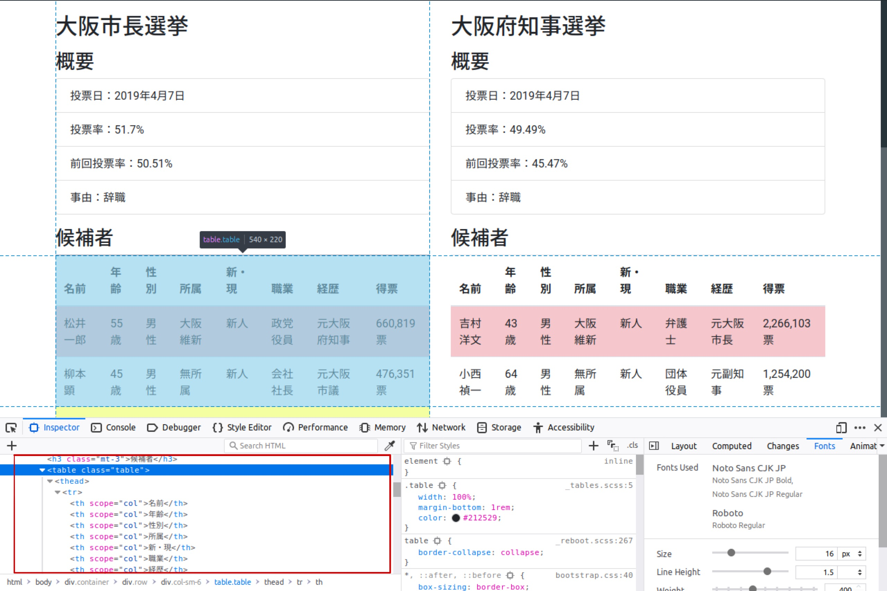

Table of Contents
はじめに
クローリングとスクレイピングをすることで定型的には公開されていないデータを自ら作成することができ、分析の幅が広がります。 APIを使ってやることもできる一方で、APIが公開されていない情報を収集したいこともよくあります。
今回はAPIを使わずに、.htmlファイルをスクレイピングする方法を説明します。
必要なパッケージの読み込み
ウェブスクレイピングにおいて役立つパッケージはrvestです。
library(tidyverse)
── Attaching packages ───────────────────────────────────────────────────────────────────────────────────────────────────────── tidyverse 1.2.1 ──
✔ ggplot2 3.1.1 ✔ purrr 0.3.2
✔ tibble 2.1.1 ✔ dplyr 0.8.0.1
✔ tidyr 0.8.3 ✔ stringr 1.4.0
✔ readr 1.3.1 ✔ forcats 0.4.0
── Conflicts ──────────────────────────────────────────────────────────────────────────────────────────────────────────── tidyverse_conflicts() ──
✖ dplyr::filter() masks stats::filter()
✖ dplyr::lag() masks stats::lag()
library(rvest)
Loading required package: xml2
Attaching package: 'rvest'
The following object is masked from 'package:purrr':
pluck
The following object is masked from 'package:readr':
guess_encoding
library(lubridate)
Attaching package: 'lubridate'
The following object is masked from 'package:base':
dateスクレイピング
大抵の場合、必要な情報は一つのページにあるということはなく、いくつものページをクローリングすることになりますが、まずは一つのページでスクレイピングして、うまくいったらクローリングと組み合わせて複数のページの情報収集をする方がよいでしょう。
ここでは、例として2019年、大阪のダブル選挙を題材にスクレイピングをしたいと思います。
.htmlファイルの読み込み
まずは、.htmlファイルを読み込む必要があります。 rvestのread_html()に読み込みたいウェブサイトのURLを入力します。
html <- read_html("https://shohei-doi.github.io/notes/posts/2019-04-19-intro-html/bootstrap4.html")
html
{xml_document}
<html lang="en">
[1] <head>\n<meta http-equiv="Content-Type" content="text/html; charset=UTF-8">\n<!-- Required me ...
[2] <body>\n <div class="container">\n <div class="row">\n <div class="jumbotron"> ...- この段階では
headとbodyを正しく読み込めているかを確認します。
表の読み込み
表を抜き出すにはhtml_table()に先程読み込んだ.htmlファイルを入力します。
results <-html %>%
html_table()
results
[[1]]
名前 年齢 性別 所属 新・現 職業 経歴 得票
1 松井一郎 55歳 男性 大阪維新 新人 政党役員 元大阪府知事 660,819票
2 柳本顕 45歳 男性 無所属 新人 会社社長 元大阪市議 476,351票
[[2]]
名前 年齢 性別 所属 新・現 職業 経歴 得票
1 吉村洋文 43歳 男性 大阪維新 新人 弁護士 元大阪市長 2,266,103票
2 小西禎一 64歳 男性 無所属 新人 団体役員 元副知事 1,254,200票- 今回は表が2つあるのでデータフレームのリストが返ってきました。
タグの中身の読み込み
特定のタグの中身を読み込む際には、html_nodes()でノードを指定し、html_text()でテキストを抽出します。 例えば、選挙の名前がほしいとします。 選挙の名前はh2タグなので、以下のように指定します。
elections <- html %>%
html_nodes("h2") %>%
html_text()
elections
[1] "大阪市長選挙" "大阪府知事選挙"リンクの読み込み
リンク先のURLを取ってきたい場合もあります。 URLはaタグの中のhrefという属性なので、次のようにhtml_attr()によって取得できます。
link <- html %>%
html_node("a") %>%
html_attr("href")
link
[1] "https://go2senkyo.com/"- ’html_node()
では一つのノードを、html_nodes()`では複数のノードを指定します。
CSSパスによる指定
例えば、当選者の情報だけが欲しいとします。 このようなときはCSSパスによって指定することができます。 具体的には以下のように記述します。
elected <- html %>%
html_nodes(css = ".table-danger") %>%
html_text()
elected
[1] "松井一郎\n 55歳\n 男性\n 大阪維新\n 新人\n 政党役員\n 元大阪府知事\n 660,819票\n "
[2] "吉村洋文\n 43歳\n 男性\n 大阪維新\n 新人\n 弁護士\n 元大阪市長\n 2,266,103票\n " Xpathによる指定
はXpathによって指定することもできます。 .htmlファイルは入れ子構造になっています。 例えば、大阪市長選挙の結果は
htmlタグの中のbodyタグの中のcontainerクラスのdivタグの中の- 2つめの
divタグの中の - 1つの
col-sm-6クラスの`divタグの中の tableタグの中の
にあります。 このような入れ子構造を記述したものをXpathと呼びます。
city <- html %>%
html_node(xpath = "/html/body/div/div[2]/div[1]/table") %>%
html_table()
city
名前 年齢 性別 所属 新・現 職業 経歴 得票
1 松井一郎 55歳 男性 大阪維新 新人 政党役員 元大阪府知事 660,819票
2 柳本顕 45歳 男性 無所属 新人 会社社長 元大阪市議 476,351票Xpathでもclassやidを使った指定ができます。
city <- html %>%
html_node(xpath = "/html/body/div/div[@class = 'row']/div[1]/table") %>%
html_table()
city
名前 年齢 性別 所属 新・現 職業 経歴 得票
1 松井一郎 55歳 男性 大阪維新 新人 政党役員 元大阪府知事 660,819票
2 柳本顕 45歳 男性 無所属 新人 会社社長 元大阪市議 476,351票//とすることで一部省略することもできます。
city <- html %>%
html_node(xpath = "//div[@class = 'row']/div[1]/table") %>%
html_table()
city
名前 年齢 性別 所属 新・現 職業 経歴 得票
1 松井一郎 55歳 男性 大阪維新 新人 政党役員 元大阪府知事 660,819票
2 柳本顕 45歳 男性 無所属 新人 会社社長 元大阪市議 476,351票ブラウザを使ったCSSセレクタとXpathの検索
実際問題、CSSパスとXpathをどうやって調べるのかという問題があります。 第一歩は実際のソースファイル（つまり.htmlファイル）を見ることです。
ウェブサイト上で右クリックをするとView Page Sourceのようなものが出てくるはずなのでそれを選択します。
- ここではFirefoxを使っていますが、Google Chromeでも同じことはできるはずです。
- EdgeとかInternet Explorerとかは知りません。
簡単なサイトであればソースファイルを見ればなんとなく分かるのですが、ちょっと複雑なサイトになるとそれすら危ぶまれます。 そのような場合はInspect機能を使います。
Firevoxの場合、右クリックをしてInspect Elementをクリックするか、設定の中のWeb Developerの中のInspectをクリックすると、ブラウザ株にいろいろな表示が出てきます。
この左上のボタンをクリックするとインスペクトモードになるので、知りたい場所にマウスを持っていきます。

うまく選択できない場合は左下のHTMLの箇所で微調整します。

知りたいノードのタグにマウスを持っていき、右クリックをするとCopyの中にXpathやCSS Pathをコピーする選択肢があるはずなので、それを選びます。
データクリーニング
ある程度、.htmlファイルからデータを抜き出すことができましたが、分析に使うにはまだ遠いでしょう。 ここでは、いくつかのデータのクリーニングの方法を紹介します。
データの結合
今のところ、resultsには大阪市長選挙と大阪府知事選挙の結果がそれぞれ別のデータフレームとして入っています。 分析するときはこれを結合したいわけですし、なんなら選挙の名前electionsも入れたいわけです。 そのようなときはfor文を使ってこのようにします。
data <- NULL
for (i in 1:length(results)) {
data <- bind_rows(data,
results[[i]] %>%
mutate("選挙" = elections[i]))
}
data
名前 年齢 性別 所属 新・現 職業 経歴 得票 選挙
1 松井一郎 55歳 男性 大阪維新 新人 政党役員 元大阪府知事 660,819票 大阪市長選挙
2 柳本顕 45歳 男性 無所属 新人 会社社長 元大阪市議 476,351票 大阪市長選挙
3 吉村洋文 43歳 男性 大阪維新 新人 弁護士 元大阪市長 2,266,103票 大阪府知事選挙
4 小西禎一 64歳 男性 無所属 新人 団体役員 元副知事 1,254,200票 大阪府知事選挙- まず、データの格納先として
dataというNULLオブジェクトを作成します。 - 選挙結果の数は
resultsに含まれているデータフレームの数なので、1からlength(results)までループを回します。 dataに新しいデータを作成してbind_rows()で結合していきます。- 新しく結合するデータは
resultsのi番目のデータフレームで、それにi番目の選挙の名前を新しい変数として付け加えています。
- 新しく結合するデータは
データのパース
文字列から必要なデータをパースしたいときがあります。 例えば、選挙結果のうち年齢と得票数は数字だけを抜き出したいのが人情です。 そのようなときはreadrのparse_number()を使います。
data <- data %>%
mutate("年齢" = parse_number(年齢),
"得票" = parse_number(得票))
data
名前 年齢 性別 所属 新・現 職業 経歴 得票 選挙
1 松井一郎 55 男性 大阪維新 新人 政党役員 元大阪府知事 660819 大阪市長選挙
2 柳本顕 45 男性 無所属 新人 会社社長 元大阪市議 476351 大阪市長選挙
3 吉村洋文 43 男性 大阪維新 新人 弁護士 元大阪市長 2266103 大阪府知事選挙
4 小西禎一 64 男性 無所属 新人 団体役員 元副知事 1254200 大阪府知事選挙ここまで来ると、地方公共団体のレベルや地名も知りたくなってしまいます。 そのようなときはstringrというパッケージを使います。
まず、選挙が行われた地方公共団体が「都道府県」なのか「市区町村」なのかに興味があるとします。 このようなときは選挙の名前に「知事」が入っていれば前者、「長」が入っていれば後者なので、str_detect()という関数で特定の単語が含まれているかを調べ、それに応じた変数の値を作成します。
data <- data %>%
mutate("地方公共団体" = if_else(str_detect(選挙, "長"), "市区町村", "都道府県"))
data
名前 年齢 性別 所属 新・現 職業 経歴 得票 選挙 地方公共団体
1 松井一郎 55 男性 大阪維新 新人 政党役員 元大阪府知事 660819 大阪市長選挙 市区町村
2 柳本顕 45 男性 無所属 新人 会社社長 元大阪市議 476351 大阪市長選挙 市区町村
3 吉村洋文 43 男性 大阪維新 新人 弁護士 元大阪市長 2266103 大阪府知事選挙 都道府県
4 小西禎一 64 男性 無所属 新人 団体役員 元副知事 1254200 大阪府知事選挙 都道府県続いて地名を抜き出したいですが、全ての都道府県と市区町村の名前と一致するかを調べるのはほぼ無理です。 そこで逆に考えると、市区町村の場合は「長選挙」を、都道府県の場合は「知事選挙」を取り除けば地名になります。 そこで、str_remove()を使います。
data <- data %>%
mutate("地名" = str_remove(選挙, "(長選挙|知事選挙)"))
data
名前 年齢 性別 所属 新・現 職業 経歴 得票 選挙 地方公共団体
1 松井一郎 55 男性 大阪維新 新人 政党役員 元大阪府知事 660819 大阪市長選挙 市区町村
2 柳本顕 45 男性 無所属 新人 会社社長 元大阪市議 476351 大阪市長選挙 市区町村
3 吉村洋文 43 男性 大阪維新 新人 弁護士 元大阪市長 2266103 大阪府知事選挙 都道府県
4 小西禎一 64 男性 無所属 新人 団体役員 元副知事 1254200 大阪府知事選挙 都道府県
地名
1 大阪市
2 大阪市
3 大阪府
4 大阪府リストの抜き出し
ほしいデータが必ずしも表形式になっているとは限りません。 例えば、選挙の概要はリスト形式になっています。
overview <- html %>%
html_nodes("ul")
overview
{xml_nodeset (2)}
[1] <ul class="list-group">\n<li class="list-group-item">投票日：2019年4月7日</li>\n <li cl ...
[2] <ul class="list-group">\n<li class="list-group-item">投票日：2019年4月7日</li>\n <li clas ...このような場合、まずは一つのリストを使ってどのような処理をしたいかイメージをつけていきます。 まず、1番目のリストのliタグの中のテキストを抜き出してtempというオブジェクトにします。
temp <- overview[1] %>%
html_nodes("li") %>%
html_text()
temp
[1] "投票日：2019年4月7日" "投票率：51.7%" "前回投票率：50.51%" "事由：辞職" 続いて、これをデータフレームに変換します。
temp <- tibble(x = temp)
temp
# A tibble: 4 x 1
x
<chr>
1 投票日：2019年4月7日
2 投票率：51.7%
3 前回投票率：50.51%
4 事由：辞職 さて、変数の名前と値は:で区切られていることがわかります。 そこで、前半をy、後半をxのようにしたいと思います。
特定の文字を抜き出すときはstr_extract()を使います。 ここでは具体的には:およびそれよりも前の部分を抜き出します。
temp <- temp %>%
mutate(y = str_extract(x, "[０-９ぁ-んァ-ヶー一-龠]+："))
temp
# A tibble: 4 x 2
x y
<chr> <chr>
1 投票日：2019年4月7日 投票日：
2 投票率：51.7% 投票率：
3 前回投票率：50.51% 前回投票率：
4 事由：辞職 事由： [０-９ぁ-んァ-ヶー一-龠]とは正規表現で全角文字全てを意味します。+は正規表現で直前の文字が一文字以上あることを意味します。:は区切りの目印となる文字です。
:は不要なのでstr_remove()で除去します。
temp <- temp %>%
mutate(y = str_remove(y, "："))
temp
# A tibble: 4 x 2
x y
<chr> <chr>
1 投票日：2019年4月7日 投票日
2 投票率：51.7% 投票率
3 前回投票率：50.51% 前回投票率
4 事由：辞職 事由 同様に変数の値も抜き出してもいいのですが、str_removeを応用することもできます。
temp <- temp %>%
mutate(x = str_remove(x, "[０-９ぁ-んァ-ヶー一-龠]+："))
temp
# A tibble: 4 x 2
x y
<chr> <chr>
1 2019年4月7日 投票日
2 51.7% 投票率
3 50.51% 前回投票率
4 辞職 事由 ロング形式になっているので、ワイド形式にします。
temp <- temp %>%
spread(key = y, value = x)
temp
# A tibble: 1 x 4
事由 前回投票率 投票日 投票率
<chr> <chr> <chr> <chr>
1 辞職 50.51% 2019年4月7日 51.7% 選挙の変数を追加します。
temp <- temp %>%
mutate("選挙" = elections[1])
temp
# A tibble: 1 x 5
事由 前回投票率 投票日 投票率 選挙
<chr> <chr> <chr> <chr> <chr>
1 辞職 50.51% 2019年4月7日 51.7% 大阪市長選挙前回投票率と投票率の変数から数値をパースします。
temp <- temp %>%
mutate("投票率" = parse_number(投票率),
"前回投票率" = parse_number(前回投票率))
temp
# A tibble: 1 x 5
事由 前回投票率 投票日 投票率 選挙
<chr> <dbl> <chr> <dbl> <chr>
1 辞職 50.5 2019年4月7日 51.7 大阪市長選挙さて、最後に投票日ですが、どの情報を抜き出すべきかは分析内容に寄ります。 しかし、年、月、日のどれを取り出すにせよ、これまでの技術を応用するだけなので、ここではRにおける日付データを作成します。 lubridateというパッケージを使うと年月日が出てくる順番に対応した関数に入れると日付データにしてくれます。
temp <- temp %>%
mutate("投票日" = ymd(投票日))
temp
# A tibble: 1 x 5
事由 前回投票率 投票日 投票率 選挙
<chr> <dbl> <date> <dbl> <chr>
1 辞職 50.5 2019-04-07 51.7 大阪市長選挙ここまで来れば、あとはコードをまとめてループを回すだけになります。 これまで1にしていたところをiにするのを忘れないでください。
data_overview <- NULL
for (i in 1:length(overview)) {
x <- overview[i] %>%
html_nodes("li") %>%
html_text()
data_overview <- bind_rows(data_overview,
tibble(x = x) %>%
mutate(y = str_extract(x, "[０-９ぁ-んァ-ヶー一-龠]+：")%>%
str_remove("："),
x = str_remove(x, "[０-９ぁ-んァ-ヶー一-龠]+：")) %>%
spread(key = y, value = x) %>%
mutate("選挙" = elections[i],
"投票率" = parse_number(投票率),
"前回投票率" = parse_number(前回投票率),
"投票日" = ymd(投票日)))
}
data_overview
# A tibble: 2 x 5
事由 前回投票率 投票日 投票率 選挙
<chr> <dbl> <date> <dbl> <chr>
1 辞職 50.5 2019-04-07 51.7 大阪市長選挙
2 辞職 45.5 2019-04-07 49.5 大阪府知事選挙最後はこのデータをdataに結合します。
data <- left_join(data, data_overview, by = "選挙")
data
名前 年齢 性別 所属 新・現 職業 経歴 得票 選挙 地方公共団体
1 松井一郎 55 男性 大阪維新 新人 政党役員 元大阪府知事 660819 大阪市長選挙 市区町村
2 柳本顕 45 男性 無所属 新人 会社社長 元大阪市議 476351 大阪市長選挙 市区町村
3 吉村洋文 43 男性 大阪維新 新人 弁護士 元大阪市長 2266103 大阪府知事選挙 都道府県
4 小西禎一 64 男性 無所属 新人 団体役員 元副知事 1254200 大阪府知事選挙 都道府県
地名 事由 前回投票率 投票日 投票率
1 大阪市 辞職 50.51 2019-04-07 51.70
2 大阪市 辞職 50.51 2019-04-07 51.70
3 大阪府 辞職 45.47 2019-04-07 49.49
4 大阪府 辞職 45.47 2019-04-07 49.49